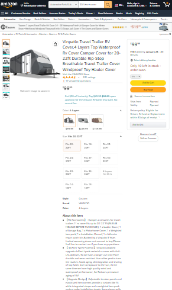
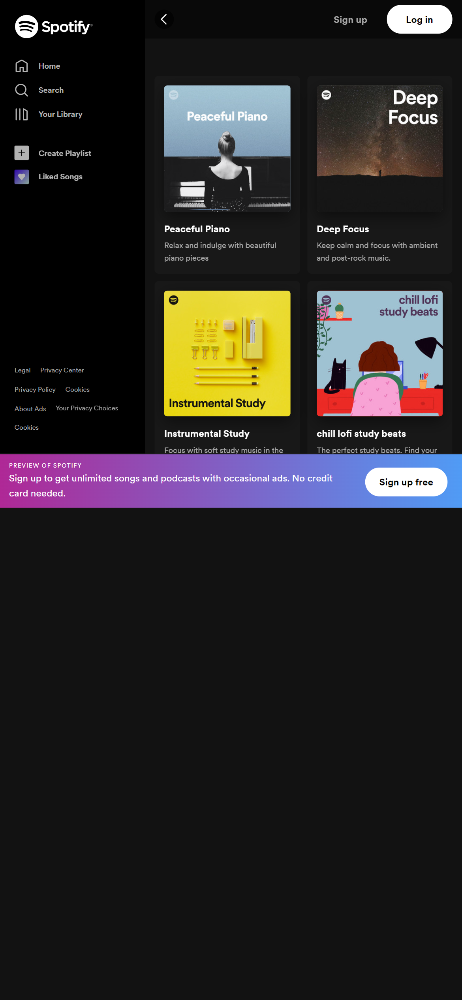

White Space
Featuring Apple
Link to site
Apple has always been known for their simple sleek design in both their hardware and their software. Their website is no exception and the reason that they are able to do this is largely becasue they try to have as little thing on the screen as possible and give each item it's own space. This can be seen on their website with one simple large image and only a little bit a text with a lot of extra space.
Visual Hierarchy
Featuring Amazon
Link to site Amazon is really good at using the design principle of Visual Hierarchy in order to help you to see what they want you to see at a glimpse while allowing you to look deeper at further content if you are interested. They do this by keeping the navigation bar large at the top, making the image of the product for sale the largest thing on the screen, and also making the buy button large. This way it is easy for customers to buy at a glance, without getting distrated by a bunch of extra content unless the user is looking for it.
Repetition
Featuring Spotify
Link to site Spotify is my prefered app for listening to music. It's functionalities are great and they sleek consistent design aids in such a good user experience. The user knows what to expect from spotify as they use a simple design and reapeat it accross the site and their app. This can me seen in how they reapeat the same box over again for different playlists